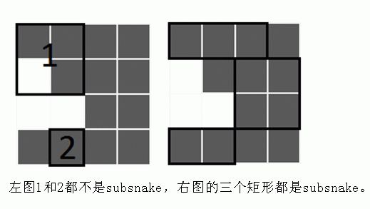

有一天，可爱的蛇心花怒放，把自己变成了一个正方形！但是她改变的时候 被induce了导致改变出了些问题.... 按照预设，她应该变成一个N*N的全黑正方形，但是这个正方形出现了一些白的格子...现在她的身体不幸出了些小反应，定义一个subsnake是一个至少有两格的全黑矩形。 
现在蛇想让你帮忙求一下一共有多少对不相交的subsnake，答案模10007。
第一行一个整数 N, 接下来N行，每行一个长度为N的字符串，如果是B，那么是黑的，如果是 W那么是白的。
一行一个整数，表示答案
3 BBW BBW BWW
5
N<=1000